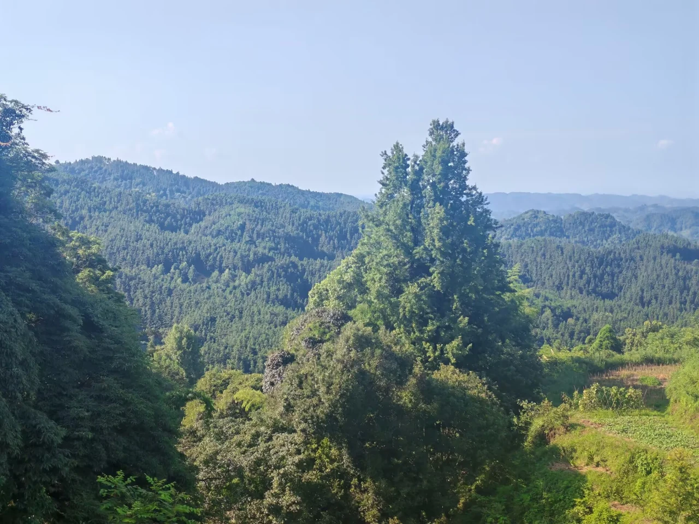
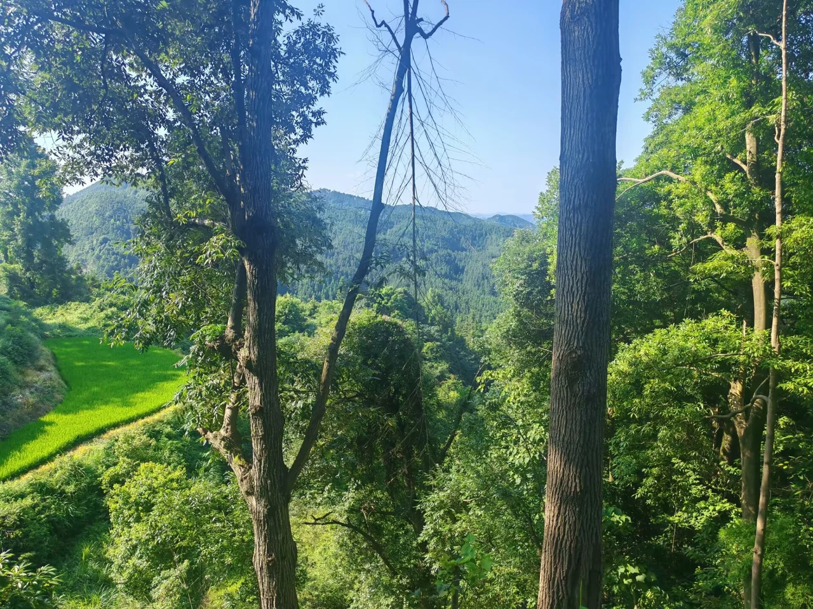
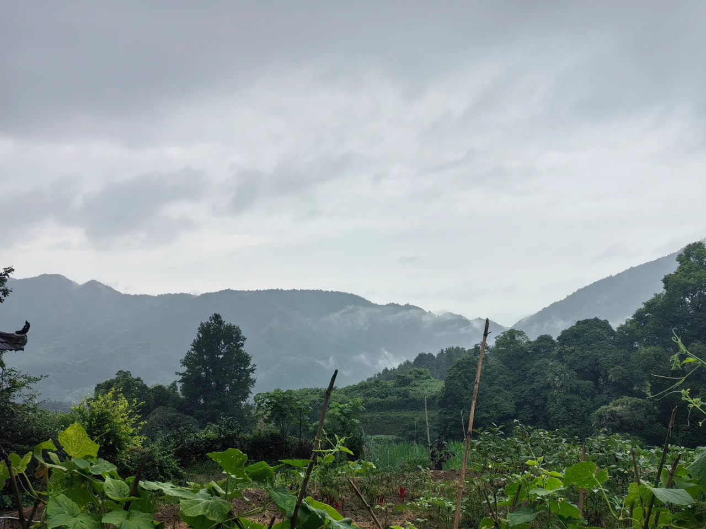

在石垅溪的夏天：我的三下乡手记
从入户走访到支教课堂，从山间田野到一行行代码，记下这个夏天在麻阳苗乡的相遇与思考。
山路把我们带进村庄，交谈让我们慢慢靠近这里的生活。
2026 年夏天，我随湖南大学计算机学院“湘伴耘途”三下乡团队来到湖南省怀化市麻阳苗族自治县大桥江乡。此行的一个重要落点，是西晃山下的石垅溪村。
出发时，行囊里装着课程安排、调研计划和对实践的期待。回头再看，真正留下来的，是几次坐下来认真听人说话的经历，是课堂里逐渐熟悉的笑声，也是田间那些需要重新观察、重新理解的问题。

走进村庄，先学会听
入户走访时，我们聊起种植、日常出行、家人的去向，也聊起看病和赶集。话题很具体：田里种什么，收成怎么处理，去镇上方便不方便，家里人什么时候回来。
这些交谈让我看见，村庄的生活不能只靠几项数据概括。有人独自照看院落和菜地，有人经营山间民宿，有人把家人团聚的日子记得很清楚。劳动、邻里和土地，构成了他们熟悉的生活秩序；出行与就医的距离，也藏在这些日常里。
走访记录中，有村民临别时送给队员自家种的黄瓜。这样的细节，比一句笼统的“村民很热情”更有分量。我们是带着问题来的，也在交谈中不断修正原先的想象。
所谓调研，首先是给对方足够的时间，把话说完。
一间教室，几天陪伴
支教开始时，孩子们和我们都需要一点时间熟悉彼此。自我介绍、混龄组队、你画我猜、击鼓传花，让教室里的拘谨逐渐变成笑声。
后续课堂里，课程不只围绕知识展开，也包括防溺水安全、时间管理、绘画、运动与校园霸凌教育。面对不同年龄的孩子，讲解需要变得具体，游戏需要留出参与的空间，安全事项也要反复提醒。
结课日的一项活动，是把难过或想说的话匿名写在纸上，再折成纸飞机。纸飞机飞出去的时候，那些话不必被公开，也不必成为展示成果的一部分。陪伴有时就是给孩子留一个可以表达、又受到尊重的空间。
另一份记忆来自孩子们的画和橡皮泥作品。有人把队员画进画里，写下感谢。短短几天，当然不足以改变很多事情，但足够让一次相遇变得具体。
古树、田野与村庄里的文化
课堂之外，我们也通过村民的讲述和实地走访，认识这片土地。龙舟是交谈中反复出现的话题：它关联着训练、后勤、返乡与村民之间的协作。文化在这里有很日常的形态，存在于大家愿意共同完成的一件事情里。
山间民宿、林中的古树、顺着地势展开的田地，也让村庄呈现出自己的节奏。我们记录风景，同时了解支撑这些风景的劳动与生活。

实践最后阶段，我们还与旅居老人交谈，听他们说起住宿、交通和生活选择，并走访了当地的红色旧址与文物展览。具体的人、物件和讲述，让书面上的历史与现实有了可以触摸的轮廓。
从田间照片，到代码里的问题
作为计算机专业的实践团队，我们也尝试把技术带到田间。围绕当地种植的吊瓜，队员采集叶片照片，用现有植物病害预训练模型做了一次初步识别探索。
这次尝试值得记录的，是模型适用范围带来的限制：原模型的训练类别并不包含吊瓜。因此，输出的其他作物病害类别，只能反映模型在已有类别中的判断，不能当作吊瓜病害的确诊结果，更不能直接据此给出种植处理建议。准确结论仍需要农业专业人员结合实际情况复核。
田间问题有自己的条件。采集更多样本、认真标注、了解作物和病害，再考虑合适的模型，这些基础工作不能被一次运行结果替代。

把经历留下来，也把网站留下来
这次实践还有一份可以继续访问的记录——麻阳苗乡暖心家园。网站把苗乡文化、石垅风光和团队活动整理在一起，让照片、文字与各期纪实有一个共同的入口。
它面向手机和电脑，也考虑了大字、大图标和简明导航这样的使用习惯。服务信息仍有需要补充与维护的地方；实践结束之后，记录是否清楚、入口是否好用、内容能否继续更新，同样值得花时间。
访问实践网站：myshilongxi.cn · 查看网站源码
对我来说，把经历写进博客，也是这份记录的一部分。让照片有说明，让活动有来处，让技术尝试的限制被认真写下，远比只留下一个热闹的总结更重要。
离开之后，继续记得
三下乡结束后，回到熟悉的校园和屏幕前，石垅溪的许多片段仍值得再想一想：如何提出一个更好的问题，怎样把课堂讲得更明白，技术能帮上什么忙，又有哪些事情需要先放下预设、认真学习。
这个夏天，我们带去了一些准备，也带回了更多需要继续理解的事。愿以后再回看这篇手记时，记得的不只是去过哪里，还有曾经怎样与那里的人和生活相遇。
本文结合实践网站的活动纪实整理，照片选自“石垅风光”相册。完整记录可在 myshilongxi.cn 查看。
谢谢读到这里。愿文字，与你有所相遇。